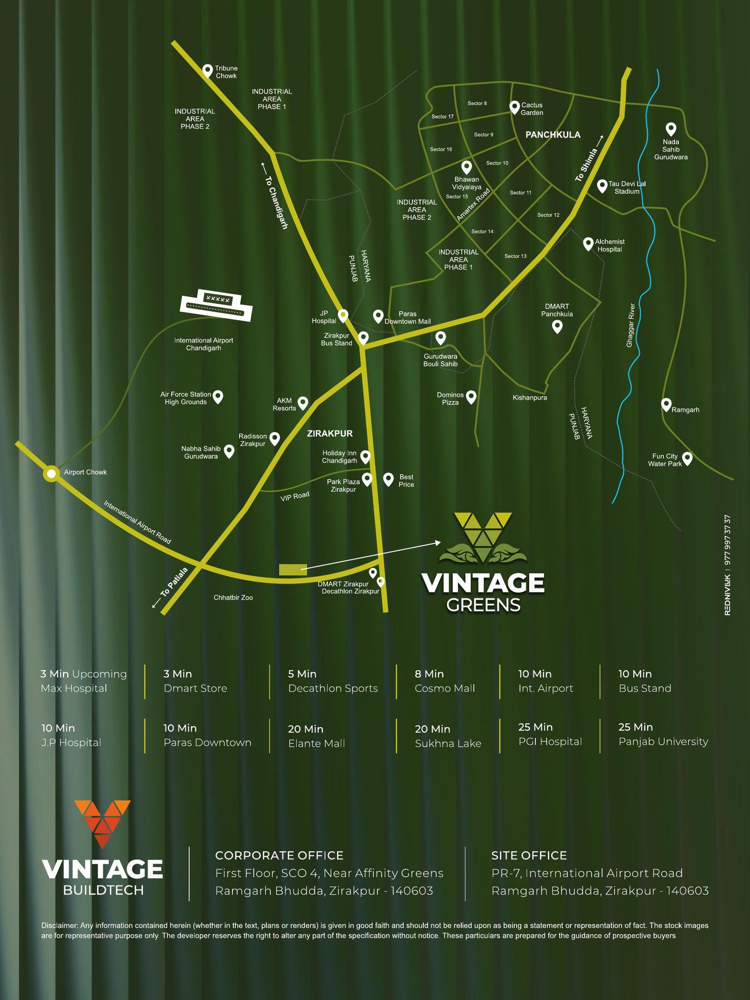

Address
International Airport Road, Zirakpur
Vintage Greens is located at PR-7, International Airport Road, Ramgarh Bhudda, Zirakpur - 140603, close to the junction that connects onward to Chandigarh, Patiala and Ambala. The immediate neighbourhood includes established names such as Radisson Zirakpur, Park Plaza and a DMart/Decathlon retail cluster nearby.
Access Luxury From Every Direction
Distances at a glance
3 min
Upcoming Max Hospital
3 min
DMart Store
5 min
Decathlon Sports
8 min
Cosmo Mall
10 min
International Airport
10 min
Bus Stand
10 min
JP Hospital
10 min
Paras Downtown Mall
20 min
Elante Mall
20 min
Sukhna Lake
25 min
PGI Hospital
25 min
Panjab University
Drive times are approximate and may vary with traffic conditions.
Location Advantages
Everything nearby, organised
Hospitals
Upcoming Max Hospital (3 min), JP Hospital (10 min), PGI Hospital (25 min).
Airport
Chandigarh International Airport — approx. 10 minutes via Airport Road.
Shopping
Cosmo Mall (8 min), Paras Downtown Mall (10 min), Elante Mall (20 min).
Transit
Zirakpur Bus Stand approx. 10 minutes; well connected via VIP Road and Airport Road.
Education
Panjab University approx. 25 minutes away.
Highways
Direct access toward Chandigarh, Patiala, Ambala and Shimla via the surrounding road network.
Come see the neighbourhood for yourself
We'll plan your site visit and location tour around your schedule.